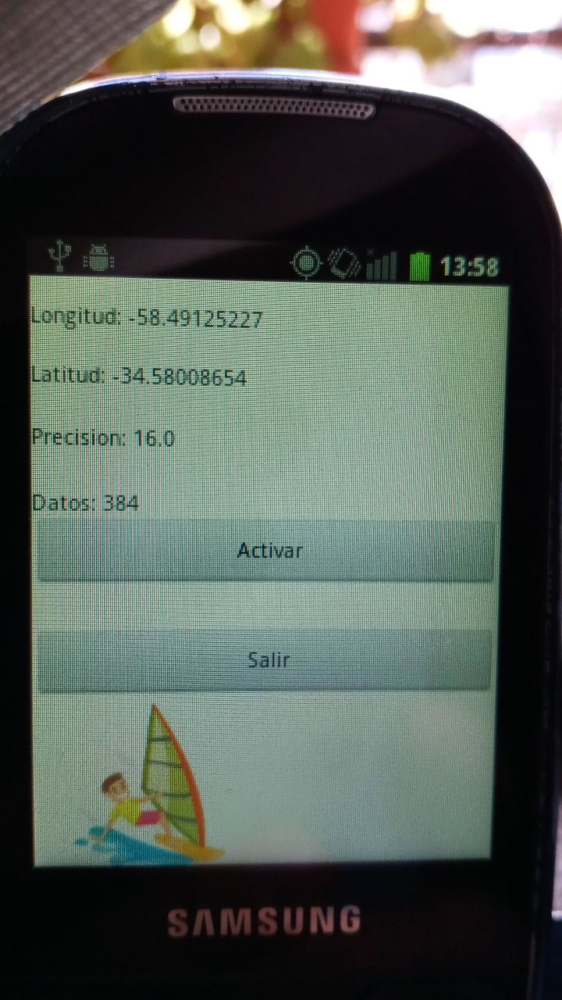
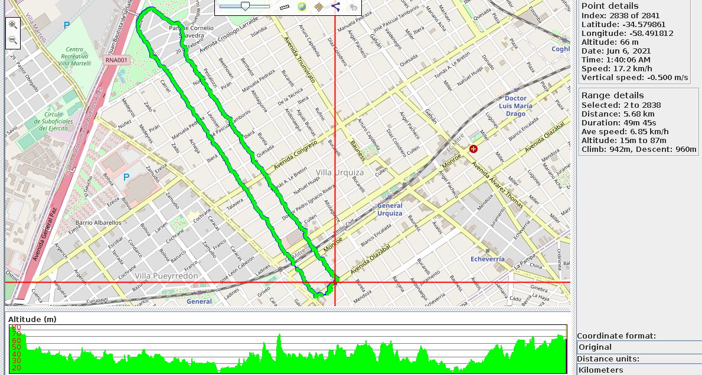

Android
I remember when I was 14 or 15, how difficult it was to access information. Books were so expensive you almost had to steal them! (Just kidding!) Today is a paradise in that sense; you can find books to learn almost anything.The Problem: One day, I was windsurfing on the river, and I had my cell phone in a waterproof bag. Unfortunately, due to a bit of fatigue and a bit of unfamiliarity, the phone holder broke, and it fell to the bottom of the river. Despite my attempts, I couldn't find it > a truly sad situation.
The Solution: Today, cell phones are big, and their batteries can't be removed. On the other hand, I have a cell phone saved from 10 years ago, a mini-computer! The power of these little devices is impressive, and many are kept unused even though they still have potential. I had a Samsung I5500; it came with Android 2.2, but with CyanogenMod, I had upgraded it to 2.3. Using the Eclipse SDK, I was able to open some old projects and create a small program that records GPS coordinates. The phone is small and fits in a life vest pocket, so I can at least record the coordinates and then visualize where I've been navigating.
Access GPS Data with Android 2.3 (GingerBread)
|  |  |
And working with GPS data, using GPSPrune, a really good utility from Linux. Here's an example route through Sarmiento Park.
For now, the program stores the date/time, latitude, longitude, and altitude on a micro SD card within the device. After that, you just need to mount it and open it with GPSPrune, for instance.
The adt-bundle-linux-x86_64-20131030.zip can be downloaded here.
If you like you can invite me a coffee.